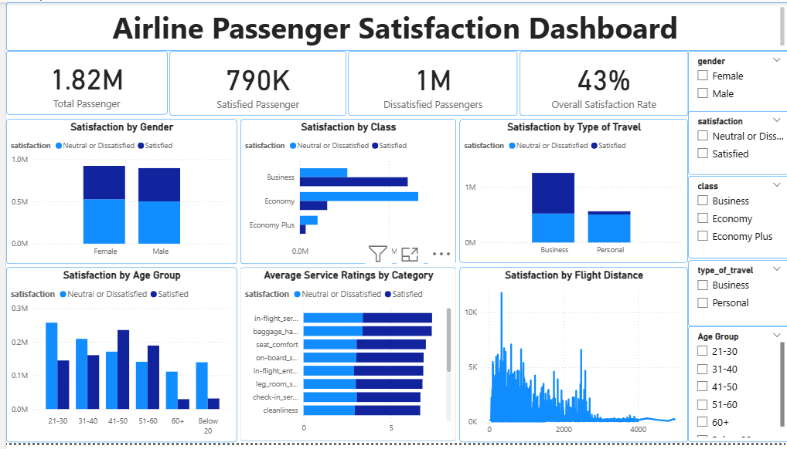
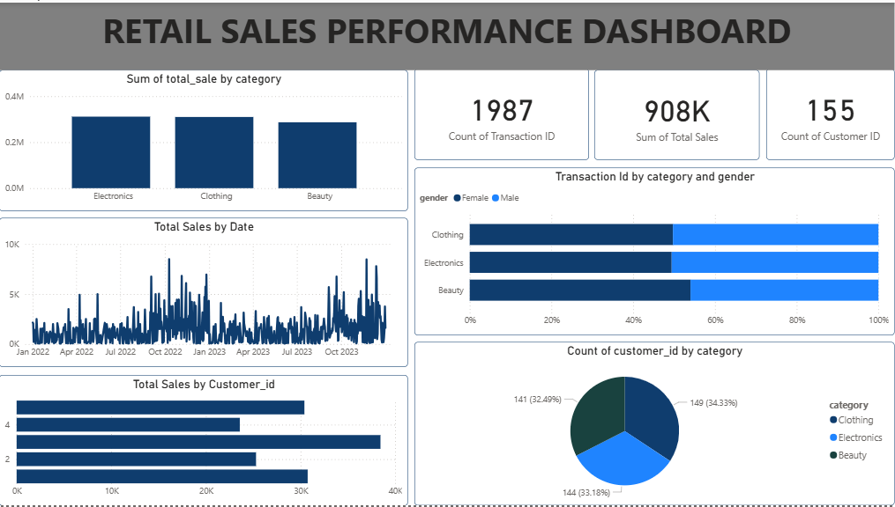
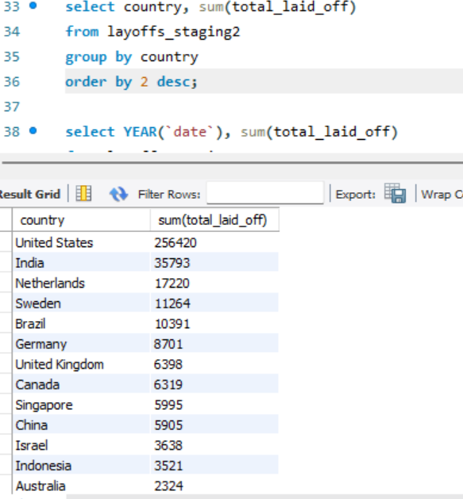
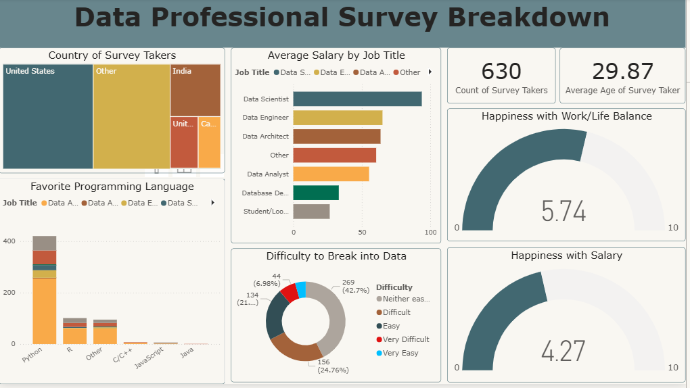

Erefa Oyeindiepreye Juliet
Data Analyst | SQL | Python | Power BI | Excel
I analyze data to uncover insights that support business decisions, improve operations, and enhance customer experience.
📄 View CVProjects

Airline Passenger Satisfaction Analysis
Analyzed airline passenger data to understand how delays and service quality impact satisfaction.
View details
- Business travelers showed higher expectations and sharper dissatisfaction during delays.
- WiFi quality and seat comfort strongly influenced satisfaction.
- Delay reduction and service improvements were recommended.


Global Layoffs Trend Analysis
Explored global layoffs data to uncover workforce reduction trends.
View details
- Technology sector was most affected.
- Layoffs increased sharply post-2020.
- Economic uncertainty correlated with spikes.

Data Professionals Survey Analysis
Analyzed survey data to understand salaries, tools, and job satisfaction.
View details
- Python, SQL, and Power BI dominated tool usage.
- Higher experience correlated with higher salaries.
- US had the highest respondent count.